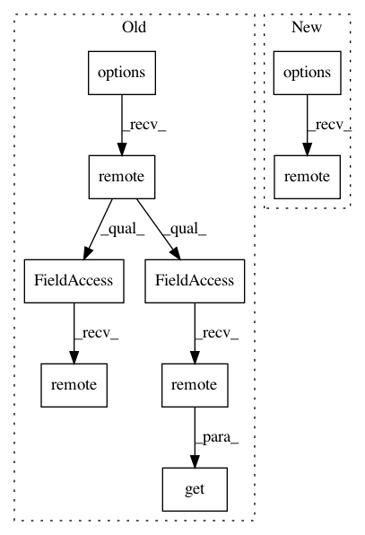

7c0200c93b88898507dbafcb2d92314d0dbcd451,python/ray/serve/api.py,,init,#Any#Any#Any#Any#Any#Any#Any#Any#Any#Any#,63
Before Change
def kv_store_connector(namespace):
return SQLiteKVStore(namespace, db_path=kv_store_path)
master_actor = ServeMaster.options(
detached=True, name=SERVE_MASTER_NAME).remote(kv_store_connector)
ray.get(
master_actor.start_router.remote(queueing_policy.value, policy_kwargs))
ray.get(master_actor.start_metric_monitor.remote(gc_window_seconds))
if start_server:
ray.get(master_actor.start_http_proxy.remote(http_host, http_port))
if start_server and blocking:
block_until_http_ready("http://{}:{}/-/routes".format(
http_host, http_port))
After Change
def kv_store_connector(namespace):
return SQLiteKVStore(namespace, db_path=kv_store_path)
master_actor = ServeMaster.options(
detached=True,
name=SERVE_MASTER_NAME,
max_reconstructions=ray.ray_constants.INFINITE_RECONSTRUCTION,
).remote(kv_store_connector, queueing_policy.value, policy_kwargs,
start_server, http_host, http_port, gc_window_seconds)
if start_server and blocking:
block_until_http_ready("http://{}:{}/-/routes".format(
http_host, http_port))
In pattern: SUPERPATTERN
Frequency: 3
Non-data size: 9
Instances
Project Name: ray-project/ray
Commit Name: 7c0200c93b88898507dbafcb2d92314d0dbcd451
Time: 2020-04-28
Author: ed.nmi.oakes@gmail.com
File Name: python/ray/serve/api.py
Class Name:
Method Name: init
Project Name: ray-project/ray
Commit Name: 1e39c403709b96d0bfa9c139e927441acc232426
Time: 2020-09-27
Author: rkooo567@gmail.com
File Name: python/ray/tests/test_placement_group.py
Class Name:
Method Name: test_capture_child_tasks
Project Name: ray-project/ray
Commit Name: 305eb74a86ad633dba754b1575f53228ab470c0a
Time: 2020-04-09
Author: ed.nmi.oakes@gmail.com
File Name: python/ray/serve/master.py
Class Name: ServeMaster
Method Name: start_http_proxy